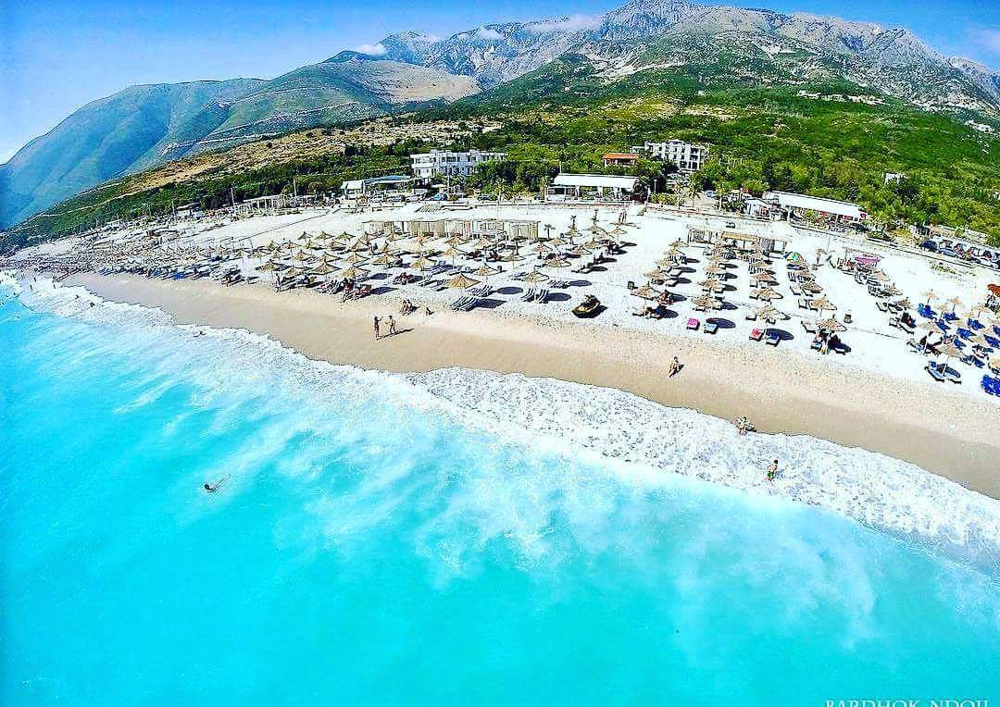

Do not forget the summer! The magic of a small village called Dhermi...
Dhërmi is a village in Vlorë County, Albania. It is part of the municipality Himarë. The village lies 42 kilometers south of the city of Vlorë and about the same distance north of the southern city of Sarandë.The village is built on a slope of the Ceraunian Mountains at approximately 200 meters in altitude. It comprises three neighborhoods: Gjilek, Kondraq (also known as Kallam), and Dhërmi itself. The mountains descend to the southwest into the Ionian coast and Corfu in the distance to the south. Nearby is the village of Palasë. Recently the coastal area has seen a boom in the construction of accommodation facilities, such as wooden villa complexes. In addition, it is considered by the Albanian youth as a nightlife destination. It has a new large promenade by the sea , and all the facilities emerged into the wild nature.